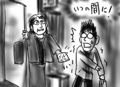
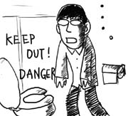
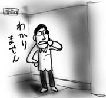

実は前から決まっていたことなのですが，仕事の関係で，6月からアメリカに引っ越すことになりました．場所はカルフォルニア州です．
ネット上の会話テクニックとしてnishikaiganを標榜して早7年．遠大な伏線が今，回収されようとしています．
というわけで，明日から一週間，有給を利用して思い出の地を巡る旅に出発します．といっても大学時代を過ごした名古屋を経由して帰省するだけなのですが．旅の記録は，出来るだけ記そうとは思いますが，更新は適度に間延びするかと思います．ご容赦下さい．ページの移転も現在，構想中です．ご迷惑をおかけします．
これで閉鎖ということはなく，向こうに行っても日本語で読める最もヘボい在米日記を繰り広げようと思っています．よろしくお願いします．
飲み物がなくなったのと，微妙に小腹が空いたので夜中(AM2:00)にコンビニまで出かけました．
コンビニにつくと，店長と中年女性が口論をしていました．「何，この油揚げ．日付け古いじゃない．油揚げって一日経ったらもうダメなのよ」「今届いたんだよ．そこに書いてある日付けまで保つんだよ(←商売人失格)」「これは古いじゃない．日付けよく見てみなさいよ．油揚げって一日で悪くなるんだよ．こんなの売る気？」とそんな感じです．夜半に油揚げを買い求める中年女性．そういうのは物怪の類いに違いありません．
なんとか関わりあいにならずに済ませたかったのに，「あんたも買う時は，日付けよく見て気をつけな」と声をかけられてしまいました．き，来た！
あいまいな笑みを浮かべる僕に向かって，「朝飯？夜食？夜食なら油物とか米とかはやめときな．太るよ．せっかくスリムなのに．そばとかにしな．そばがいいよ．物足りないと思って油物に手を出したら太るよ」と一方的な話は止まりません．言われるまでもなく，夜食はそばの軽いやつにしようと思っていたので，さっさと会計を済ませて逃げようと商品に手を伸ばしたところ…．
「ほら，日付けよく見な．これは新しいけど，これは古いでしょ．気をつけないと．ったくここの店長は」と，よほどさっきの油揚げが腹に据えかねたのか，店長に聞こえるように悪態をつき始めました．半分あきらめて「ここの店長，確かによくないですよね」と小声で返事をしたところ，「そうだろ，そうだろ」と満足げにうなずく中年女性．「よし，おばちゃんがそれ買ってあげよう」．変なフラグが立った！
「い，いや自分で買います」とそばをひっつかんでレジへ向かいます．「あんたいくつ？」なおも追いすがる中年女性．「いくつに見えます？」真実を答えるのは怖いので訪ね返す僕．「21くらい？」答える中年女性．言えない！28にもなってこんなヘボい生活をしているなんて今さら言えない！「ま，まぁそんなもんです」「このやろう」なぜかニンマリする中年女性．怖いよぅ…．
なんとかレジまで辿り着き，会計を済ませます．コンビニのドアへ向かいます．中年女性も後ろの方で会計を始めたので今のうちに逃げ切れる！ドアをくぐる！「終わった！」そう思った時．
「ちょっと待ちな」いつの間にか後方にいる中年女性．「ほら，これ持って行きな」中年女性が会計していたのは，なんと僕に渡すためのブルーベリーパンだったのです．「ブルーベリーは体にいいんだ」と僕の手にパンを押し付けます．ここまで来たら逃げられないので適当にお礼を言って受け取ります．背中がもやもやします．

僕は，よほど栄養の足りてない学生に見えるらしい．部屋のテーブルに置かれたブルーベリーパンを前に腕を組みながら，そう述懐します．朝に馬糞になってなければ，このブルーベリーパンが朝飯になるはずです．ぶるぶる．
(本当は昨日の日記が始まるよ)
ようやくEOFが返りました！と会社で喜んでいたら，グループの人に「むしろ，EOV(Volume)じゃないか？」と指摘されました．なるほど，Multi Volumeだ！(すいません)
さて，バリウムは，元素番号が56という重い物体です．実際に検査で飲むのは硫酸バリウムですが，重い事には違いありません．それとは別に，家のトイレは節水タイプというやつでBENKI内の水位が低く，最低限の水量でコンパクトに洗い流すよう設計されています．つまり何が言いたいかというと，今家のトイレは思い浮かべるのも嫌な状態に陥っています．

IRC(要はチャット)で助けを求めたところ「薬品で溶かせ」というアイデアをいただきました．でも，硫酸バリウム以外のバリウム化合物は，まず間違いなく劇物です．僕はどうすればいいのでしょうか．せいぼがこうりんする！
医療技術の進歩を心から望みます．人類のために．(健康診断三部作・完)
(昨日の続き)健康診断がああなってこうなって最後のレントゲン検査だよ！
レントゲン室に通されると，すぐにその場で浴衣のような服装に着替えさせられます．ズボンを脱いでいるとドアを開けて女性の看護士さんが現れました．廊下からも丸見え．よりによって最悪のタイミングです．何で僕がこんな辱めを？
肩に胃の活動を抑える注射をした後，続いて発泡剤を飲むのですが，飲み込むための水は一口ゼリーくらいしかもらえません．不可能です．口の中に残った発泡剤は放っておくとみるみる膨らんでくるので，根性で飲み下すしかありません．この時点で挫折しそうだ．
そしてついにバリウムが手渡されます．手のひらサイズの紙コップに一杯．なぁんだこれくらいなら一気に飲み込めば平気だ．発泡剤より辛くなかった．と思ったら「じゃぁ次はこれ」と超特大の紙コップにズッシリ詰まったバリウムが！ごめんなさい．

涙を流しながら飲み干すと，撮影士のおっさんが，僕が乗った撮影台をリモコン操作で上下左右自由自在に揺さぶり始めました．うぉあー．しかし，ここでゲップは絶対に禁止．口から，鼻から，目から，隙あらば抜けようとする炭酸を必死で堪えるのです．僕，今憤怒の形相してない？
というわけで，ふらふらになって健康診断終了．これから下剤を飲みます(12:10)．出て行けバリウム．
…
現在17:00なんですが，下剤効果によってトイレに通い続けています．未だに白い便が出てきます．streamからEOFが返らないので，これをいつまで続けていいのか，不安で仕方ありません．
今日は健康診断で町の小さな病院まで出かけました．
廊下の長椅子に腰掛けて順番を待っていると「身長と体重はかります」と声をかけられたので，バッグと上着を持って立ち上がったところ，即座に「荷物はいいです」と言われました．それもそのはず，看護士さんは，廊下の隅に打ち捨てられている身長計と体重計をごそごそと引っ張り出しているではないですか．ここでやるんですか！そして普段使ってなさすぎ！
視力検査表も同様に，廊下の隅から看護士さんがよっこらせと担ぎ出してセットアップしてくれました．また廊下で測定です．僕は，オタマジャクシで片目を隠しながら3m離れた視力検査表を凝視して「上，右，左，…」と答えたのは，おそらく10年ぶりくらいではないかと思います．

採血も看護士詰め所みたいな部屋で行われ，完全に「ここの健康診断は病院の隙間を利用して行うんだ」と思い込んだ矢先，階上の一室に案内されました．薄汚れた(失礼)病院の一角に，突如出現するマンション風の小部屋．なんだこの空間は！(越前)
リビングにあたる部屋に聴音検査器と超音波検査器があり，順番を待ってる間はダイニングでソファに座りながら「花まるクッキング」を見られるという案配です．打って変わりすぎ！聴音検査器と超音波検査器だけ，どうしてこんなに特別扱いなのか．そして花まるクッキングは，単なるキャベツと挽肉の煮物をどうしてそんなに大層な様子で解説するのか．謎は尽きません．
というわけで聴音検査と超音波による腸の検査が終わると，本日の最終ボス，胃のレントゲン検査がやってきました．バリウムは初体験です．長いので続きます．(つづく)